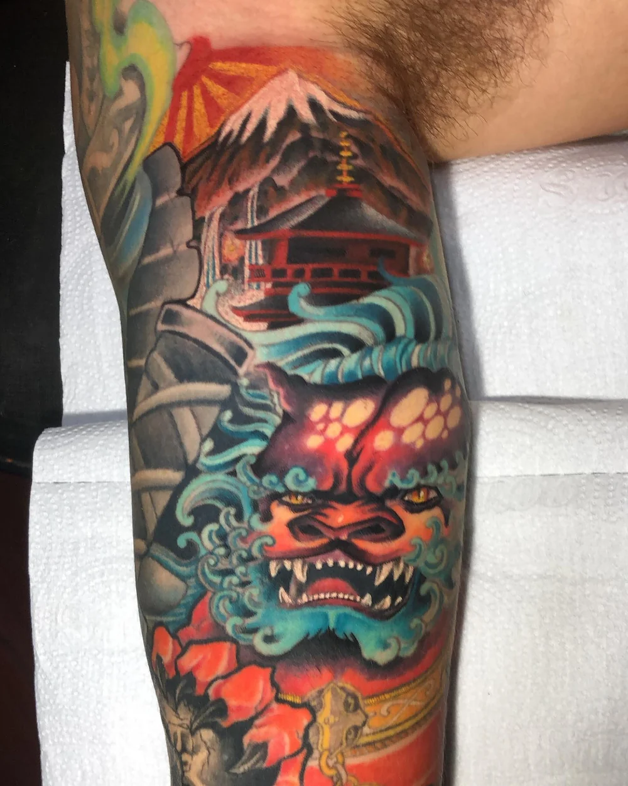
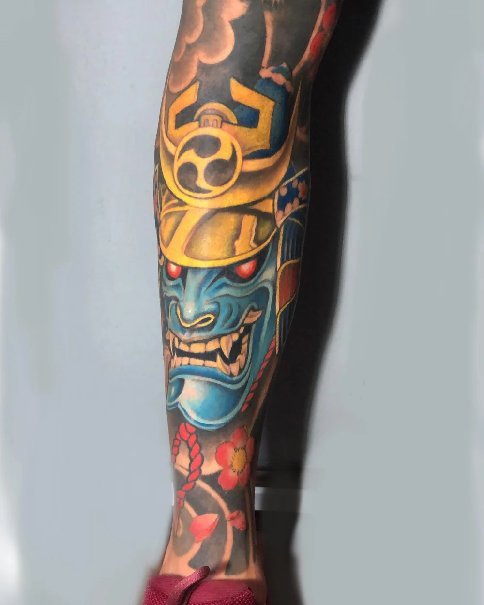
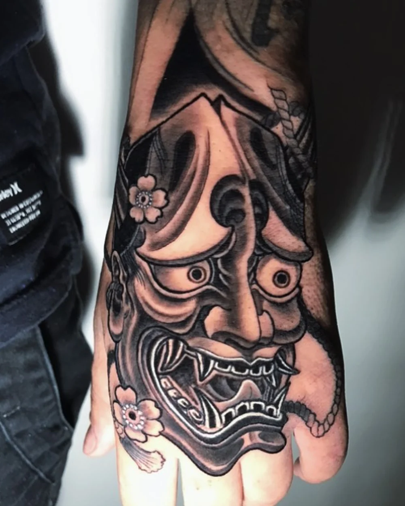
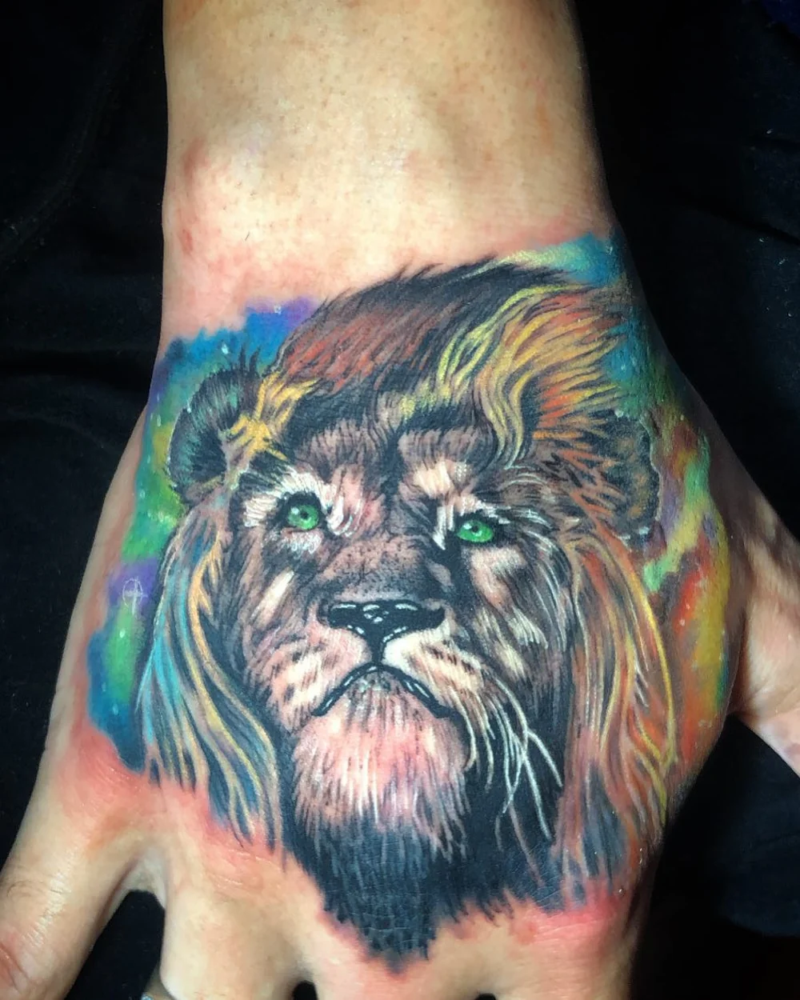
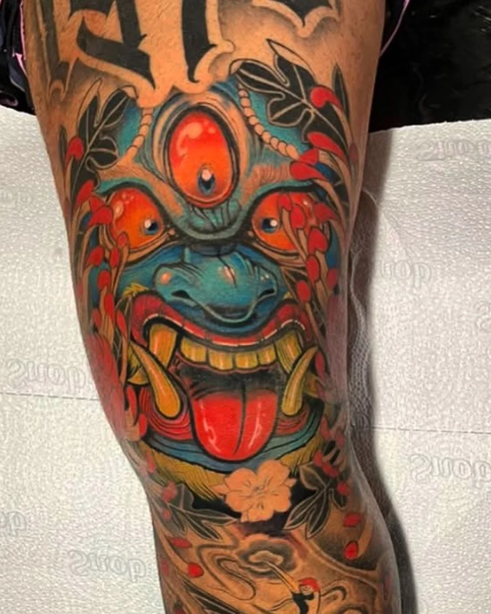
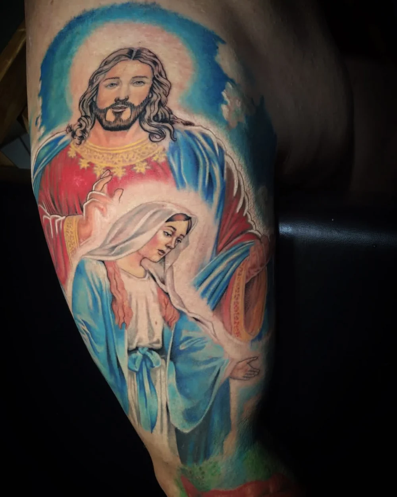
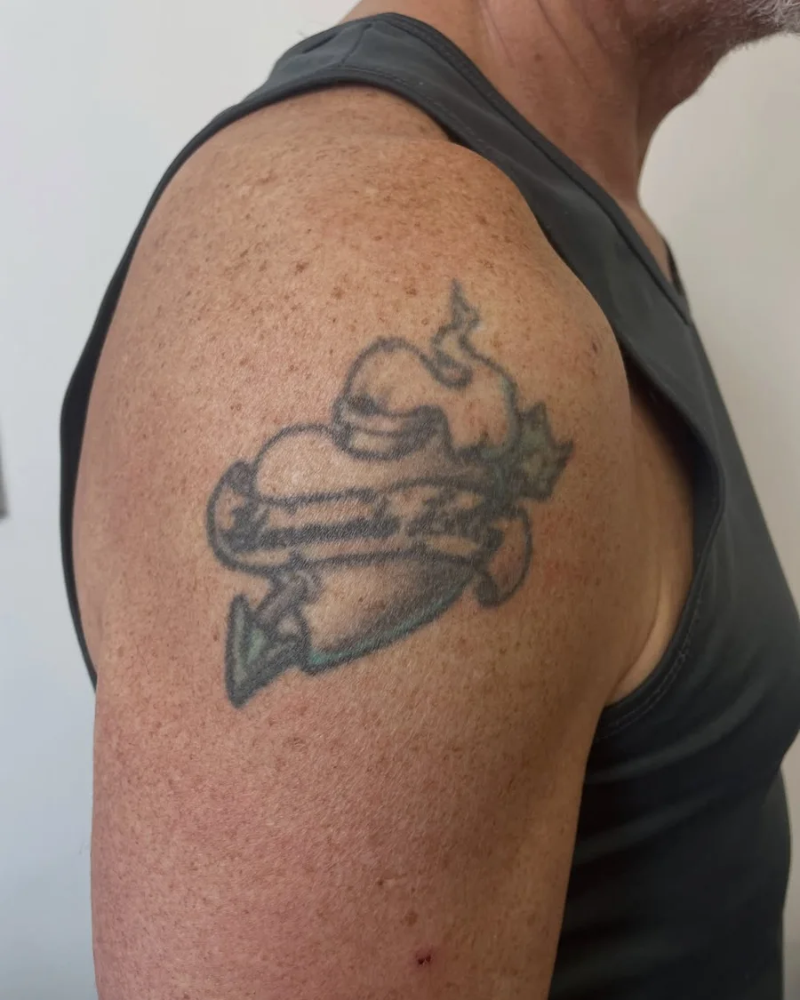
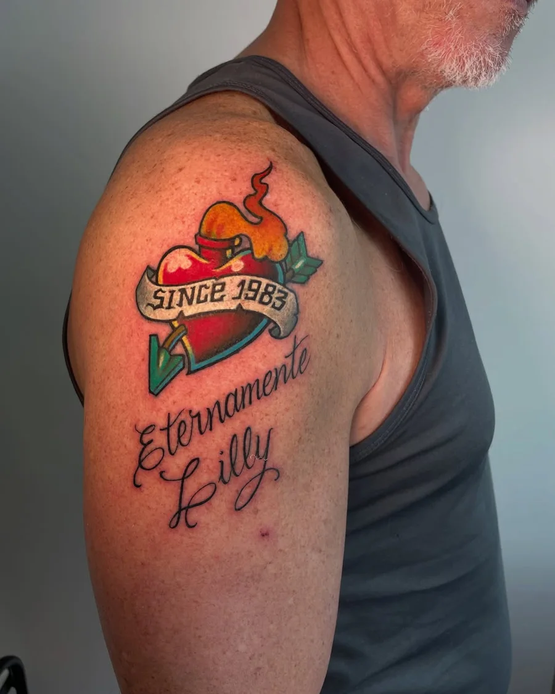
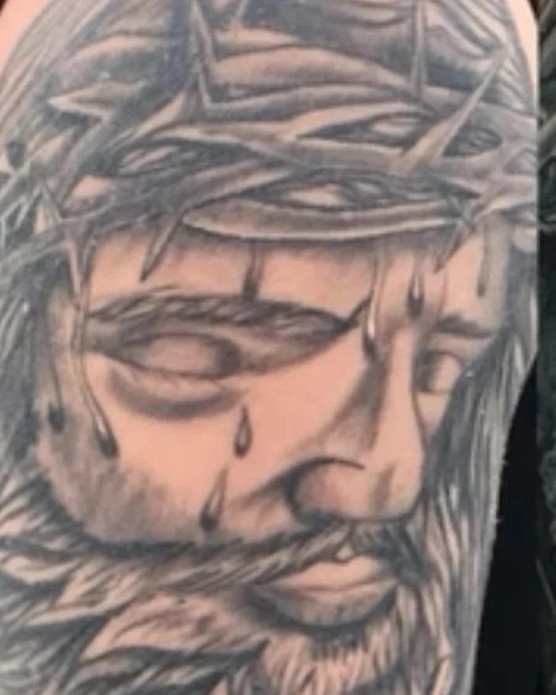

Tatuagem em Curitiba✴Desde 2005






Vini Tattoo
Colorido, blackwork, free hand e cobertura. Tatuagens exclusivas.
Trabalhos
Do colorido ao preto e cinza, passando pelo oriental e pelo maori. Toque numa peça para ver em tamanho grande.
Cobertura e reforma
Tem uma tatuagem antiga ou que não te agrada? O Vini desenha a peça nova em cima dela, à mão livre.



Alugue o espaço
Uma sala de 30 m² no coração de Curitiba, na Rua XV de Novembro. Para tatuadores, body piercers, maquiadores, micropigmentação e estética.
Hora avulsa
R$ 50
Para uma sessão curta ou um atendimento pontual.
Pacote de 4 horas
R$ 180
Meio período para sessões maiores.
Diária de 8 horas
R$ 320
O dia inteiro para fechar a agenda.
- Estrutura equipada
- Wi-Fi
- Agendamento flexível
- Centro de Curitiba
Sobre o Vini
Vinicius Antônio tatua desde 2005. São mais de vinte anos eternizando arte na pele, com qualidade e respeito a quem senta na cadeira.
Faz colorido, blackwork, oriental, maori e pontilhismo, e boa parte sai no free hand: o desenho é feito com canetas direto na pele, acompanhando o movimento do corpo. Cada projeto é exclusivo, criado a partir da ideia de quem chega.
Também é barbeiro e atende no Centro de Curitiba.
Ver o InstagramEstúdio
No Centro de Curitiba, na Rua XV de Novembro. Atendimento com hora marcada.
- Endereço
- R. XV de Novembro, 297
Sala 1001 · 10º andar · Centro - (41) 99825-5010
- @tattoovini
- Cidade
- Curitiba · PR
Pedir orçamento
Traga a sua ideia. O pedido chega pronto no WhatsApp do Vini.
A ideia
O tema ou uma imagem de referência.
O estilo
Colorido, preto e cinza, oriental ou maori.
O local
Onde vai ficar e de que tamanho.
A foto
Na conversa, mande a referência e o local.